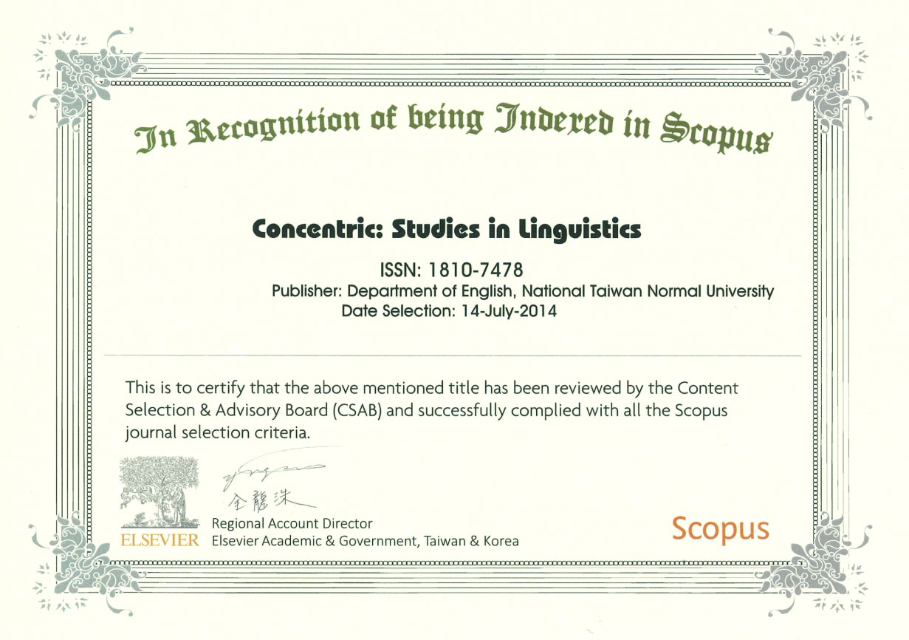

Learning English in a Virtual World – Immersive vocabulary learning is effective
Dr. Hao-Jan Chen is a Distinguished Professor of the English Department at the National Taiwan Normal University (NTNU), Taipei, Taiwan. He is currently the President of The English Teaching and Research Association (ETRA) and serves on the editorial boards of the SSCI-indexed Computer Assisted Language Learning and the THCI-core-indexed English Teaching & Learning.
Dr. Chen’s research interests include computer-assisted language learning (CALL), corpus research, and second language acquisition. He has published more than 50 journal papers, more than half of which are published in SSCI-indexed journals, and served as one of the editors of Chinese for Specific and Professional Purposes: Theory, Pedagogical Applications, and Practices and Learner Corpora: Construction and Explorations in Chinese and Related Languages, two monographs in Chinese Language Learning Sciences.
Dr. Chen has extensive experience in developing a variety of websites and tools for second/foreign language learning and teaching, including an automatic writing suggestion system for academic English and an open website with more than 40 English corpora as well as 10 Chinese corpora available. He is now developing and maintaining Cool English, a large English learning website with more than 1.2 million registered users, for facilitating the learning of English as a foreign language (EFL) in Taiwan.
-
Want to know more:
- Automatic Writing Suggestion System
Cool English—A One-stop Website for English Learning
Cool English , an open educational resource (OER) website supported by the Ministry of Education in Taiwan, is developed by Dr. Chen and his team with many professors from the fields of teaching English for speakers of other language (TESOL), computer sciences, and digital learning. Cool English currently has four major sections to serve students from different educational stages, namely elementary school, junior high school, senior high school, and vocational high school. The original purpose of building Cool English was to provide students in rural areas with more free and interesting learning resources to further improve their English skills, but this website is now also open to the public for anyone who is interested in improving their English at any age and in any place. Anyone can register an account to freely explore and use the learning resources in this one-stop site to improve their English skills and knowledge.
To enhance learners’ English development, a wide variety of CALL theories and technologies are adopted to produce engaging learning materials in Cool English. For example, Cool English utilized automatic speech recognition (ASR) technology and text-to-speech (TTS) technology to respectively detect learners’ pronunciation errors and train their oral expression skills.
In addition to the self-developed learning materials, Cool English also incorporates useful resources from another website(s) or companies, such as open-source videos from Voice of America (VOA) and authorized e-books from TCM, to enhance learners’ English listening, speaking, reading, vocabulary, and grammar. Videos and e-books from these sources were further processed with Chinese subtitles and TTS-based audio respectively for learners’ better use of these materials. To make English learning more engaging, different types of digital games, either developed by Cool English team or purchased/licensed from internet resources, are also included in Cool English.
The inclusion of abundant videos, self-developed learning materials, and engaging games makes Cool English a welcome site for English learners. This site starts its service in mid-2016, and it now has more than 1.2 million registered users with nearly 150 million visits in total. In addition to the learners, Cool English also has more than 20,000 teacher users now, who can manage their own classes to assign students their assignments, track their participation, and view their assignment scores via our website.
-
Want to know more:
- Cool English
NTNU’s language technology makes teaching and learning more enjoyable, easy, and effective
NTNU Chinese Language and Technology Center (CLTC) has established a platform to measure learners’ Chinese reading and speaking abilities for Chinese language learners.
In order to allow Chinese learners to have a more convenient and professional Chinese reading platform, NTNU Chinese Language and Technology Center (CLTC) has established SmartReading-Mandarin. SmartReading-Mandarin is a Chinese adaptive reading platform designed for learners who learn Chinese as a second language or foreign language, providing learners with an interesting Chinese reading journey. Learners can choose different learning tracks according to their own Chinese proficiency, learn Chinese reading and earn reading experience points as rewards.
What SmartReading-Mandarin can do for you
The platform of SmartReading-Mandarin provides many e-books written by professional teaching teams on the reading platform. In addition to grading vocabulary marking, there are also audiobook functions available. Chinese learners improve their Chinese reading ability in a relaxed and interesting way.
Learn how we discover the readability of a book
We employ AI technology to analyze a large number of books from different fields and different levels of difficulty, establishing the SR score which is the readability of a book. SR-Mandarin has leveled thousands of books’ readability, including Simplified and Traditional Chinese books. The larger the SR score is, the more difficult a book is. DACC-Mandarin can provide the reading proficiency of a Chinese language learner, and SR-Mandarin can provide the SR of a book. Users can refer to the description of each level to judge their reading ability and choose the books that suit them. According to the reading ability diagnosis results, learners choose Chinese e-books suitable for their reading ability—the e-books on this platform cover all reading texts at the Chinese level. The SR core can be mapped to the Chinese proficiency level according to the European Union CEFR and the American ACTFL. While the learners are reading the e-books, they provide the interpretation of the words and add post-reading tests to test their understanding of the contents of the reading.
Track Learning Progress
A Student’s learning records and the result of assessments can help his/her teachers not only track the student’s learning progress but also adjust the teaching plans.
-
Want to know more:
- SmartReading-Mandarin
SmartPinyin is a pedagogical and diagnostic platform for Mandarin listening and pronunciation that provides immediate diagnosis and feedback for Chinese language learners' listening and speaking skills, allowing learners to lay the foundation of listening and speaking without being restricted by time and space in order to improve their Chinese language skills. Our platform also provides adaptive listening and pronunciation courses, allowing learners to practice repeatedly, enhance speech perception, and correct pronunciation.
Why You Should Use SmartPinyin
It's always said that Chinese listening and speaking of tone are the two most difficult skills for learners to learn by themselves. On the other hand, considering the limitations of curriculum planning and teaching time, the time spent by Chinese teachers in teaching pronunciation and listening cannot meet the needs of individual students. With the aid of SmartPinyin, it provides an individualized learning platform, making both teaching and learning more interesting, easy, and effective.
What we offer
Diagnostic feedback and training lessons on initials, finals, and tones in Chinese are provided.
Speaking
The system uses the ASR (automatic speech recognition) system, which gives users immediate feedback.
Listening
SmartPinyin provides online assessments and learning programs focusing on students’ Chinese speaking and listening skills. The system also provides a complete test report, allowing learners to understand their weaknesses in initials, finals, and tones and strengthen their practice.
e-Portfolio
According to the measured ability of different learners, the platform systematically arranges adaptive courses. Each learner has an electronic portfolio where learners can view what they have learned and also allow teachers to monitor student progress.
-
Want to know more:
- SmartPinyin
Academic Journals Published by National Taiwan Normal University
Concentric: Literary and Cultural Studies
Founded in 1964, Concentric: Literary and Cultural Studies is a peer-reviewed academic journal published two times per year by the Department of English at National Taiwan Normal University in Taipei, Taiwan. The journal is indexed in Scopus, Arts & Humanities Citation Index (A&HCI). Concentric is devoted to offering innovative perspectives on literary and cultural issues and advancing the transcultural exchange of ideas.
-
Want to know more:
- Concentric: Literary and Cultural Studies

Concentric: Studies in Linguistics
First published in 1964, Concentric: Studies in Linguistics is a journal covering the technologies/fields/categories related to Linguistics and Language . It is published by National Taiwan Normal University. According to SCImago Journal Rank (SJR), this journal is ranked 0.101. SCImago Journal Rank is an indicator, which measures the scientific influence of journals. It considers the number of citations received by a journal and the importance of the journals from where these citations come.
The journal is indexed in Scopus, Emerging Sources Citation Index (ESCI), Modern Language Association (MLA) Directory of Periodicals, MLA International Bibliography, Linguistics & Language Behavior Abstracts (LLBA), EBSCOhost, Communication & Mass Media Complete (CMMC), Airiti Library (AL), Taiwan Citation Index-Humanities and Social Sciences, and Taiwan Humanities Citation Index(THCI)-Level 1.
-
Want to know more:
- Concentric: Studies in Linguistics Introduction
English Teaching & Learning
Founded in 1976, English Teaching & Learning is an international refereed journal published quarterly by National Taiwan Normal University. It is the first scholarly journal in Taiwan dedicated solely to research on the teaching and learning of English as a second or foreign language. It has been rated “A” and “tier one” in Taiwan Humanities Citation Index (THCI) since 2014 and tier 1 in Linguistic & Language on Scimago since 2022, and it is now indexed in Scopus, Emerging Sources Citation Index, MLA, EBSCOhost-Education Research Complete, and Google Scholar.
English Teaching & Learning aims to publish quality papers that contribute to all aspects of the profession, with a particular preference for studies that seek to combine both theory and practice. The journal welcomes submissions on course design, teaching materials, teacher training, teaching methods, language assessment, and bilingual education, as well as from the fields of sociolinguistics, psycholinguistics, and other related areas.
-
Want to know more:
- English Teaching & Learning